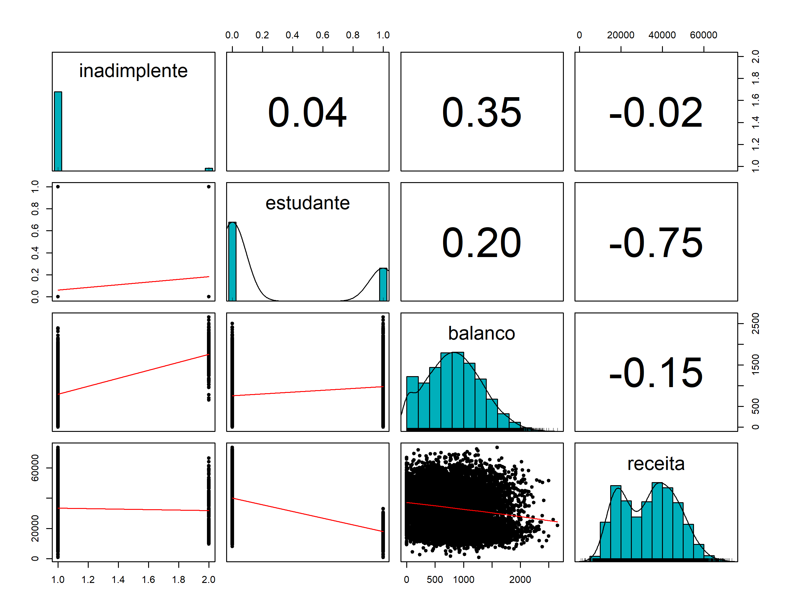
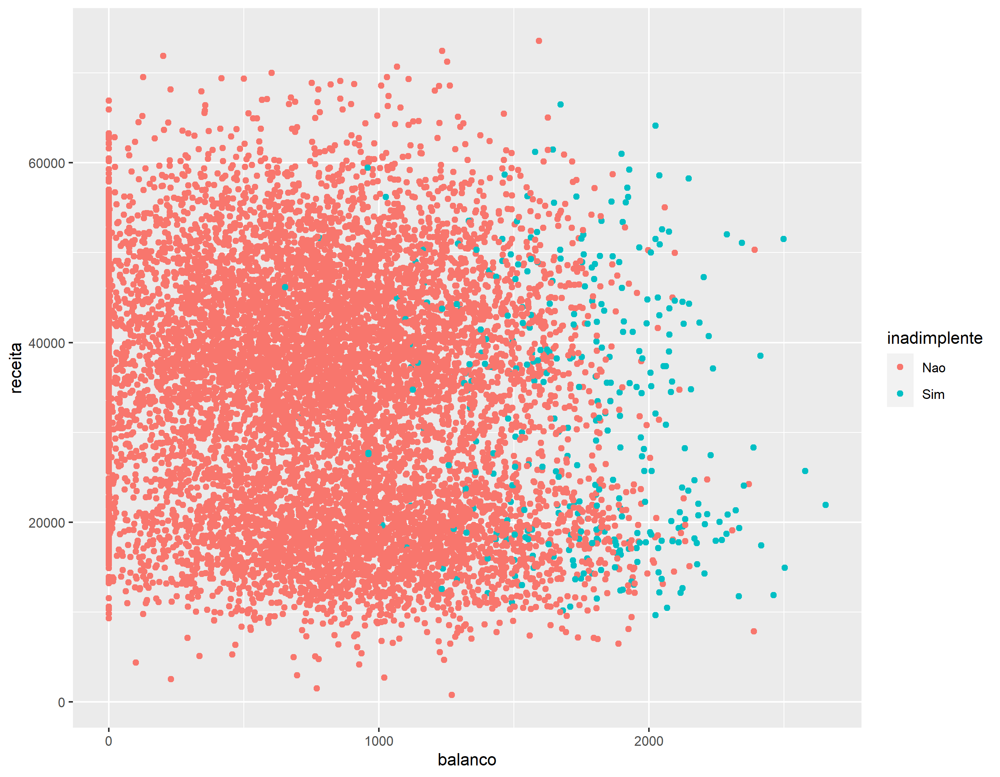
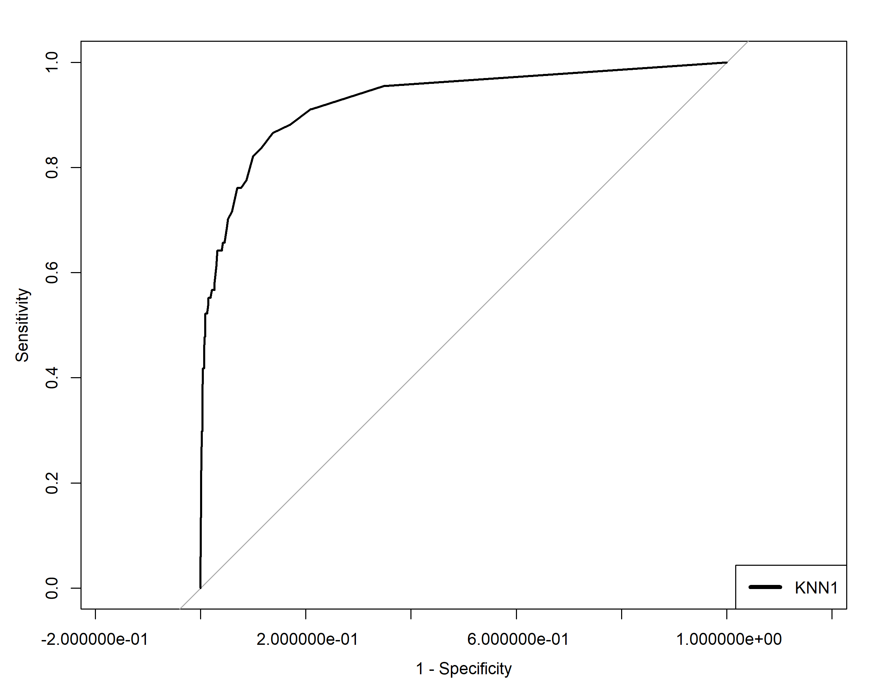
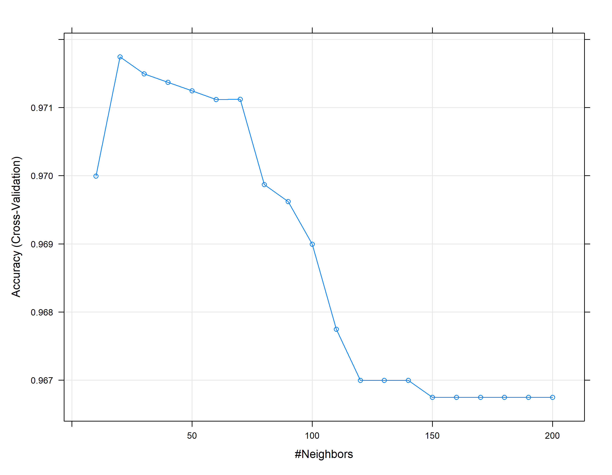

O KNN é um algoritmo muito simples no qual cada observação é prevista com base em sua “semelhança” com outras observações. Ao contrário da maioria dos métodos, KNN é um algoritmo baseado na memória e não pode ser resumido por um modelo de forma fechada. Isso significa que as amostras de treinamento são necessárias no tempo de execução e as previsões são feitas diretamente das relações amostrais. Consequentemente, os KNNs também são conhecidos como aprendizes preguiçosos
default student balance income
No :9667 No :7056 Min. : 0.0 Min. : 772
Yes: 333 Yes:2944 1st Qu.: 481.7 1st Qu.:21340
Median : 823.6 Median :34553
Mean : 835.4 Mean :33517
3rd Qu.:1166.3 3rd Qu.:43808
Max. :2654.3 Max. :73554
default student balance income
1 No No 729.5265 44361.625
2 No Yes 817.1804 12106.135
3 No No 1073.5492 31767.139
4 No No 529.2506 35704.494
5 No No 785.6559 38463.496
6 No Yes 919.5885 7491.559
Manipulando os dados
credito <-tibble(Default)summary(credito)
default student balance income
No :9667 No :7056 Min. : 0.0 Min. : 772
Yes: 333 Yes:2944 1st Qu.: 481.7 1st Qu.:21340
Median : 823.6 Median :34553
Mean : 835.4 Mean :33517
3rd Qu.:1166.3 3rd Qu.:43808
Max. :2654.3 Max. :73554
set.seed(21)y <- credito_n$inadimplenteindice_teste <-createDataPartition(y, times =1, p =0.2, list =FALSE)conj_treino <- credito_n %>%slice(-indice_teste)conj_teste <- credito_n %>%slice(indice_teste)summary(conj_treino)
inadimplente estudante balanco receita
Nao:7733 Min. :0.0000 Min. :-1.726998 Min. :-2.455267
Sim: 266 1st Qu.:0.0000 1st Qu.:-0.732026 1st Qu.:-0.913102
Median :0.0000 Median :-0.033621 Median : 0.076805
Mean :0.2953 Mean :-0.005588 Mean : 0.001763
3rd Qu.:1.0000 3rd Qu.: 0.685798 3rd Qu.: 0.774041
Max. :1.0000 Max. : 3.760371 Max. : 3.002050
summary(conj_teste)
inadimplente estudante balanco receita
Nao:1934 Min. :0.0000 Min. :-1.726998 Min. :-2.156595
Sim: 67 1st Qu.:0.0000 1st Qu.:-0.727536 1st Qu.:-0.910738
Median :0.0000 Median : 0.002479 Median : 0.080508
Mean :0.2909 Mean : 0.022340 Mean :-0.007049
3rd Qu.:1.0000 3rd Qu.: 0.677484 3rd Qu.: 0.759484
Max. :1.0000 Max. : 3.361757 Max. : 2.828416
Matriz de dispersão
Vamos agora explorar os dados originais para termos algum visão do comportamento das variáveis explicativas e a variável dependente.
library(psych)pairs.panels(credito, method ="pearson", # metodo de correlaçãohist.col ="#00AFBB",density =TRUE, # mostra graficos de densidadeellipses =FALSE# mostra elipses de correlação )

Avaliando o comportamento das variáveis em função do status (inadimplente / estudante)
ggplot(data = credito, aes(x=balanco, y = receita, col = inadimplente)) +geom_point()

KNN
Vamos usar a função knn da biblioteca caret que tem ótimas funcionalidades. Observem que a saída pode ser as classes ou as probabilidades de pertencer a uma classe
Como o KNN usa as distancias entre os pontos ele é afetado pela escala dos dados, portanto, é necessário que os dados sejam normalizados (padronizados) para eliminar este efeito.
Quando temos diversas variáveis explicativas em diferentes escalas, em geral, elas devem ser transformadas para ter media zero e desvio padrão 1
1a Modelo
# Vamos usar a regra da raiz quadrada do tamnho da amostrasqrt(nrow(conj_treino)) ## ~90
[1] 89.43713
set.seed(21)t_knn1 <-knn3(inadimplente ~ balanco + receita + estudante, data = conj_treino, k =90)t_knn1
90-nearest neighbor model
Training set outcome distribution:
Nao Sim
7733 266
Avaliando o modelo
A acurácia deu um valor alto, mas isto não é suficiente para considerarmo que temos um bom modelo. Veja que a sensibilidade está muito baixa e que o ideal é que tenhamos valores altos de sensibilidade e especificidade.
Observar que a prevalência é muito baixa o que está afetando os resultados do modelo
## y_chapeu_knn1 <-predict(t_knn1, conj_teste, type ="class")# Matriz de confusão para valiar os resultadosconfusionMatrix(y_chapeu_knn1, conj_teste$inadimplente, positive="Sim")
Confusion Matrix and Statistics
Reference
Prediction Nao Sim
Nao 1930 51
Sim 4 16
Accuracy : 0.9725
95% CI : (0.9644, 0.9792)
No Information Rate : 0.9665
P-Value [Acc > NIR] : 0.07329
Kappa : 0.3579
Mcnemar's Test P-Value : 5.552e-10
Sensitivity : 0.238806
Specificity : 0.997932
Pos Pred Value : 0.800000
Neg Pred Value : 0.974255
Prevalence : 0.033483
Detection Rate : 0.007996
Detection Prevalence : 0.009995
Balanced Accuracy : 0.618369
'Positive' Class : Sim
Curva ROC
library(pROC)# Para a curva ROC preciso das probabilidades e não das classesp_chapeu_knn1 <-predict(t_knn1, conj_teste, type ="prob")head(p_chapeu_knn1)
# Aqui gera o curva e salvo numa variávelroc_knn1 <-roc(conj_teste$inadimplente ~ p_chapeu_knn1[,2], plot =TRUE, print.auc=FALSE, col="black", legacy.axes=TRUE)legend("bottomright",legend=c("KNN1"), col=c("black"),lwd=4)

# Area abaixo da Curva (AUC)as.numeric(roc_knn1$auc)
[1] 0.9276227
Variando K
Anteriormente usamos k=90. Este parametro deve ser ajustado para melhoramos os modelo KNN. Para isto vamos usar a função train da biblioteca caret
Observe que a otimização de k é feita através de acurácia
set.seed(21)# Usando validação cruzada para obter o valor de k através da função train da biblioteca caret e o controle do treino e fazendo um gride de valores para k.ctrl <-trainControl(method ="cv")t_knn2 <-train(inadimplente ~ balanco + receita + estudante,method ="knn", trControl= ctrl, tuneGrid =data.frame(k =seq(10,200, by=10)),data = conj_treino)## Resultados do treinot_knn2
k-Nearest Neighbors
7999 samples
3 predictor
2 classes: 'Nao', 'Sim'
No pre-processing
Resampling: Cross-Validated (10 fold)
Summary of sample sizes: 7200, 7200, 7199, 7198, 7199, 7200, ...
Resampling results across tuning parameters:
k Accuracy Kappa
10 0.9699953 0.37022050
20 0.9717451 0.37122371
30 0.9714948 0.34761685
40 0.9713698 0.32858918
50 0.9712448 0.30506559
60 0.9711200 0.29038841
70 0.9711204 0.28281374
80 0.9698700 0.22792293
90 0.9696197 0.20538564
100 0.9689948 0.15840977
110 0.9677454 0.09462220
120 0.9669959 0.03351642
130 0.9669961 0.01339042
140 0.9669961 0.01339042
150 0.9667464 0.00000000
160 0.9667464 0.00000000
170 0.9667464 0.00000000
180 0.9667464 0.00000000
190 0.9667464 0.00000000
200 0.9667464 0.00000000
Accuracy was used to select the optimal model using the largest value.
The final value used for the model was k = 20.
plot(t_knn2)

## Previsões com o resultaddos do treinoprev_knn2 <-predict(t_knn2, conj_teste)confusionMatrix(prev_knn2, conj_teste$inadimplente, positive="Sim")
Confusion Matrix and Statistics
Reference
Prediction Nao Sim
Nao 1926 40
Sim 8 27
Accuracy : 0.976
95% CI : (0.9683, 0.9823)
No Information Rate : 0.9665
P-Value [Acc > NIR] : 0.008318
Kappa : 0.5183
Mcnemar's Test P-Value : 7.66e-06
Sensitivity : 0.40299
Specificity : 0.99586
Pos Pred Value : 0.77143
Neg Pred Value : 0.97965
Prevalence : 0.03348
Detection Rate : 0.01349
Detection Prevalence : 0.01749
Balanced Accuracy : 0.69942
'Positive' Class : Sim
Variando K de outra forma
Vamos adicionar mais opções no trainControl
Ao colocar classProb = TRUE e summaryFunction ao invés da acurácia a otimização passa a ser através o ROC
Confusion Matrix and Statistics
Reference
Prediction Nao Sim
Nao 1934 66
Sim 0 1
Accuracy : 0.967
95% CI : (0.9582, 0.9744)
No Information Rate : 0.9665
P-Value [Acc > NIR] : 0.4829
Kappa : 0.0285
Mcnemar's Test P-Value : 1.235e-15
Sensitivity : 0.0149254
Specificity : 1.0000000
Pos Pred Value : 1.0000000
Neg Pred Value : 0.9670000
Prevalence : 0.0334833
Detection Rate : 0.0004998
Detection Prevalence : 0.0004998
Balanced Accuracy : 0.5074627
'Positive' Class : Sim
Veja que ao otimizar pela ROC o modelo escolhido tem sensibilidade zero! Isto obviamente não é um bom modelo! Neste caso a opção de otimização do parametro pela acurácia dá melhores resultados.
## Area embaixo das curvasas.numeric(roc_knn1$auc)
[1] 0.9276227
as.numeric(roc_knn2$auc)
[1] 0.9032436
Observe que os resultados de área abaixo da ROC não são suficientes para a escolha do k, pois precisamos estar atentos a sensibilidade e especificidade!
Os resultados encontrados apontam k=20 como a melhor opção